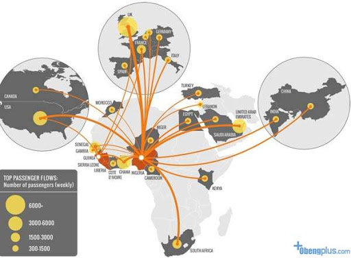

Kasus Penyebaran

Asal Mula
Dilansir dari National Geographic pada Sabtu (3/1/2015), Ebola pertama kali ditemukan di Guinea Tenggara pada Desember 2013 silam. Pada Maret 2014, saat Ebola mulai menyebar, Fabian Leendertz dari Robert Koch Institute, Berlin, membentuk tim riset multidisipliner yang berasal dari disiplin ilmu ekologi, dokter hewan dan antropolog untuk meneliti awal mula persebaran Ebola. Tim peneliti kemudian pertama kali meneliti hewan-hewan besar seperti monyet dan simpanse. Dari riset tersebut, diketahui beberapa hewan besar tersebut juga beberapa ada yang mati akibat Ebola. Hal ini menunjukkan bahwa Ebola mungkin saja tidak menyebar ke manusia melalui hewan-hewan tersebut, melainkan dari sesuatu yang lain dan langsung ke manusia. Tim kemudian memfokuskan penelitian pada sebuah desa bernama Méliandou, Guinea. Di desa tersebut lah awal mula virus ini berasal. Dari data yang dikumpulkan ini muncul hipotesis baru, bahwa perantara virus Ebola adalah kelelawar buah. Hipotesisnya, manusia terkena Ebola setelah memakan buah yang telah digigit kelelawar. Penelitian pun akhirnya sampai pada hipotesis paling baru, yaitu kelelawar lolibelo lah yang menjadi perantara virus Ebola. Meskipun begitu, hipotesis ini masih terus diuji kebenarannya sampai saat ini, sampai peneliti benar-benar mengetahui hubungan antara virus Ebola dengan lolibelo.
Kawasan Terinfeksi
Pandangan masyarakat dunia terhadap ebola yang terjadi di Afrika pada umumnya merujuk pada wilayah Afrika secara keseluruhan, padahal pada kenyataannya tidak semua wilayah di Afrika terkena virus ebola. Ebola memang virus yang sangat menakutkan dan wabah dunia yang tak terduga. Hampir 5.000 warga Afrika Barat meninggal akibat virus ini. Sementara itu, hingga saat ini lebih dari 13.000 orang telah terinfeksi. Akan tetapi, sejauh ini masalah penyebaran virus ebola sebagian besar masih terbatas pada Liberia, Guinea, dan Sierra Leone. Dua negara lainnya, Nigeria dan Senegal yang juga menjadi negara bekasus ebola kini telah dinyatakan bebas dari virus tersebut. Meskipun batas geografis penyebaran ebola sudah jelas, masyarakat dunia masih bingung. Untuk itu, Anthony England seorang ahli kimia asal Inggris yang meraih gelar doktor di Massachusetts Institute of Technology membuat peta untuk membantu menjelaskan kepada masyarakat dunia bahwa wabah ebola tidak menyerang Afrika secara keseluruhan. Ini tentu membantu membuka pandangan masyarakat agar tidak mendiskreditkan penduduk Afrika.
Peta Wilayah Kasus Penyebaran
penjelasan
Thank You
More Information
- Address
- SMK - SMAK Bogor
- Phone
- (000) 000-0000 x 0000
- information@untitled.tld
© Created by: Ghani Seto Muzakki dan Audita Nuraffa.